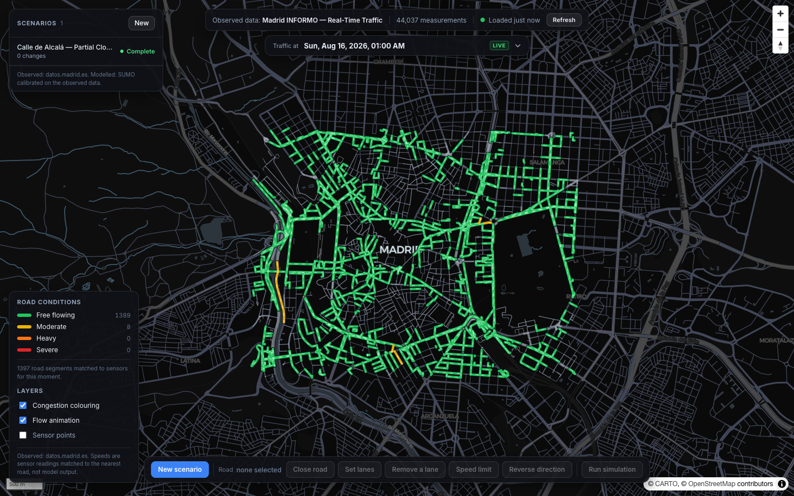
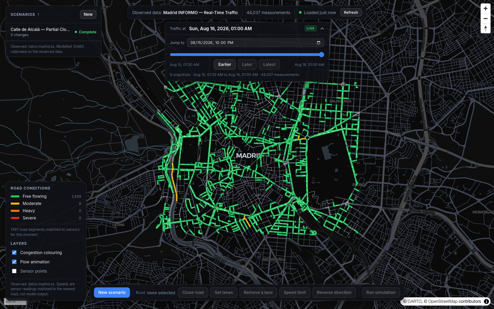
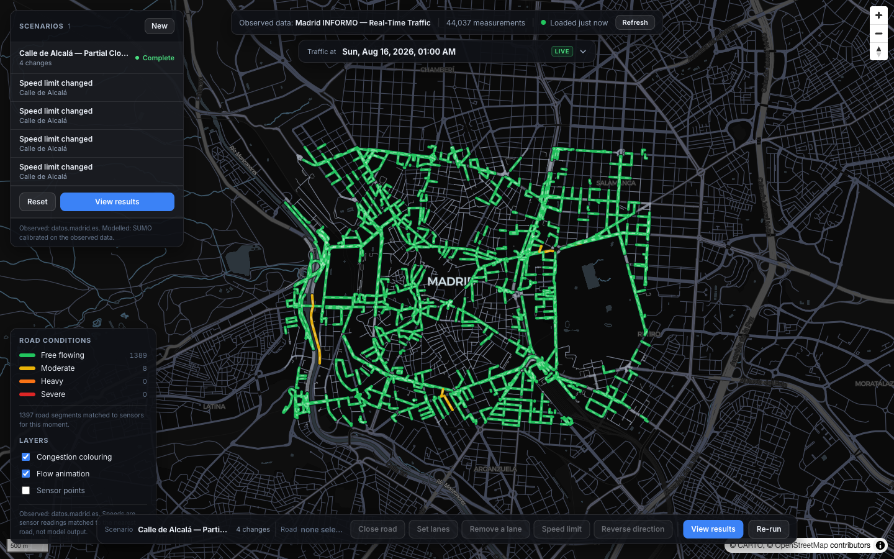
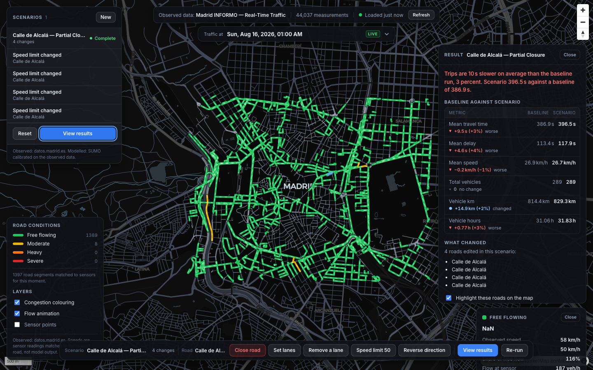

A concept web tool for traffic scenario analysis in central Madrid. Pick any road on the map, apply a change such as a speed reduction or lane restriction, and run a SUMO microsimulation. Results appear in a comparison panel that shows how every fleet-level KPI shifted against a fixed baseline.
Built as a personal research project to explore what a low-friction scenario lab might look like for a city with open sensor data. Not a production tool.

The idea is simple: instead of writing a permit application to understand what closing a road might do to traffic, you click the road on the map, add a patch to a scenario, and run the simulator. The backend takes the standard SUMO network for central Madrid, applies whatever changes you described (speed limits, lane counts, closures), regenerates vehicle routes scaled to the current INFORMO density readings, and runs a one-hour microsimulation. The results panel shows baseline versus scenario side by side.
The SUMO network is built from an OpenStreetMap extract of the Gran Via corridor using netconvert, so every simulated edge corresponds to a real street. Vehicle intensity is drawn from 4,893 Madrid loop-detector measurement points in the INFORMO XML feed, so the baseline trip count is anchored to observed data rather than synthetic demand.
Six stages from scenario definition to KPI panel:
The .net.xml is pre-built from the OSM file and cached on disk. Each run copies it into an isolated temp directory. Scenario patches are applied via Python ElementTree: for speed changes, every <lane> child element of matching edges gets a new speed attribute (the compiled network stores speed on lanes, not on the edge element). For lane reductions, excess <lane> elements are removed and all connection elements referencing deleted lane indices are clamped. After patching, randomTrips.py --validate generates O-D routes via duarouter. SUMO runs 3,600 simulated seconds at 1-second step resolution. Outputs are tripinfo.xml (per-vehicle KPIs) and edge_data.xml (5-minute interval measurements per edge). Both are parsed and stored in the database, then surfaced in the React comparison panel.
The scenario below was run end-to-end to verify the patching pipeline works correctly. Four segments of Calle de Alcalá (a primary east-west artery in central Madrid) had their speed limit reduced to 5 km/h. Both the baseline and the scenario ran to completion and the comparison panel shows a measurable difference.
| KPI | Baseline | Scenario | Change |
|---|---|---|---|
| Mean travel time | 386.9 s | 396.5 s | +9.5 s (+2.5%) |
| Mean delay | 113.4 s | 117.9 s | +4.6 s (+4.1%) |
| Mean speed | 26.9 km/h | 26.7 km/h | -0.18 km/h (-0.7%) |
| Vehicle km travelled | 814.4 km | 829.3 km | +14.9 km (+1.8%) |
| Vehicle hours | 31.06 h | 31.83 h | +0.77 h (+2.5%) |
| Total vehicles | 289 | 289 | no change |
Vehicles diverted by the Alcalá restriction drive more total kilometres (the longer detour routes explain the +14.9 km) and arrive later on average (+9.5 s travel time). The delays are modest because 289 random-trip vehicles on a 5,942-edge network do not saturate any single corridor, but the direction of the change is correct and the magnitude is proportional to the restriction applied.
.net.xml via ElementTree before the run. Multiple roads can be patched in a single scenario./api/tiles/{z}/{x}/{y}.pbf. Zoom-adaptive geometry simplification. Road colour and width vary by highway classification. Dark base map with glass-morphism floating panels.| Frontend | React 18 with Vite and TypeScript. Zero TypeScript errors at build. MapLibre GL JS for all map rendering. Glass-morphism floating panels with inline styles, no external component library. |
| Map tiles | PostGIS ST_AsMVT served through FastAPI. Tiles at /api/tiles/{z}/{x}/{y}.pbf. 33 KB per tile at Z12 for central Madrid. Zoom-adaptive ST_Simplify tolerance. |
| Backend | FastAPI with asyncpg (async throughout). One background task per simulation run via BackgroundTasks. Sync SQLAlchemy engine inside asyncio.to_thread for the SUMO runner. All domain data in PostGIS: INFORMO sensors, road segments, scenarios, patches, observations, simulation runs, and summaries. |
| SUMO | eclipse-sumo 1.27.1 installed via pip. Binary resolved at runtime via Path(sumo.__file__).parent / "bin" / "sumo" rather than PATH lookup. randomTrips.py --validate generates routes via duarouter. Each run is fully isolated in a tempfile.mkdtemp directory. |
| Database | PostgreSQL 15 with PostGIS 3. Tables: roads, study_areas, scenarios, scenario_changes, simulation_runs, simulation_summary, simulation_edge_results, traffic_measurement_points, traffic_observations. GIST spatial index on all geometry columns. |
| Data | INFORMO XML feed (4,893 sensors, UTM 30N converted to WGS84 via pyproj). OSM extract via Overpass API for the Gran Via corridor (40.4014, -3.7263 to 40.4310, -3.6757). Road segments imported via osmnx. |
Speed is stored on lane children, not the edge element. In a compiled SUMO .net.xml, the speed attribute lives on each <lane> child, not on the <edge> parent. Setting edge.set("speed", ...) adds an attribute that SUMO ignores at runtime. The patch had been storing the speed on the edge for months without any effect on simulation results. Fixed by iterating every <lane> child of each matched edge and setting speed there directly.
OSM compound edge IDs need parsing before SUMO matching. osmnx simplifies multi-segment roads and gives them compound IDs like way/[421575788, 420753262]. These are used as the row identifier in the PostGIS roads table. SUMO, however, names each individual segment after its OSM way ID: 421575788#0, 420753262, and the reverse-direction variants. The patch system now extracts all digit sequences from the compound string and matches any SUMO edge whose base way ID (stripping the leading minus and the #N segment suffix) appears in that set.
asyncpg drops named parameters before PostgreSQL cast suffixes. SQLAlchemy named parameters of the form :param::jsonb cause asyncpg to silently discard the bind before sending the query, leaving the literal colon in the SQL string and producing a PostgresSyntaxError: syntax error at or near ":". Replacing cast suffixes with CAST(:param AS jsonb) resolves it. The bug surfaced on every scenario-change insert and was invisible in development because the ORM layer swallowed the error.
CTE materialisation breaks nearest-neighbour spatial queries. The road-conditions endpoint used a latest_per_sensor CTE to pre-compute each sensor's most recent reading, then joined via a JOIN LATERAL ... ORDER BY geom <-> road LIMIT 1 KNN query. PostgreSQL materialises CTEs by default (version 12 onwards), which discards the GiST index on the base table. Without the index the lateral degrades from O(roads log sensors) to O(roads * sensors): approximately 29 million geography comparisons, which timed out after 120 seconds. Fixed by replacing the CTE with a nested lateral scanning traffic_measurement_points directly, so the spatial index drives the KNN scan. Query time dropped to 30 ms.
netconvert segfault on PostGIS-generated node/edge XML. Generating node and edge XML from PostGIS caused netconvert to segfault (exit code 139) during junction-shape computation. The root cause was osmnx compound IDs like way/[7642969, 1184792073] appearing as edge IDs in the generated XML, which are invalid in SUMO's parser. Fixed by switching to direct OSM file import via netconvert --osm-files madrid_network.osm. The native parser handles all 5,942 edges without modification.
SUMO binary not on PATH when installed via pip. shutil.which("sumo") returns None because eclipse-sumo installs its binaries into the venv's site-packages/sumo/bin/ directory, which is not added to PATH. Resolved by explicit lookup: Path(sumo.__file__).parent / "bin" / "sumo".
All screenshots taken from the locally running application.


